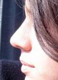

resto.txt.html
 order
order simple, list, normally, order, array, simple, simple, divided, order, simplicity, simple, list, order, list, list, routinely, list, order, form, simply, order, form, simply, list, organic
 orality
orality dining, eat, dinner, soups, lunch, dinner, feast, tomato, sauce, vegetables, cheeses, sauce, broth, dish, beef, tomato, sauce, olives, garlic, peas, tomato, dishes, veal, dish, veal, mushrooms, vegetables, potatoes, garlic, coffee, dessert, bite, food, dining, food, menu, stomach, menu, delicacy, palate, cakes, drinks, raw, salad, menu, beefeater, meal, desserts, delicacies, feasting, cheesecake, fruit, ginger, pastry, dessert, cook, eat, tea, teas, drink, apple, raspberry, lemongrass, dinner, food, eggs, tea, drinks, apple, bacon, mint, lime, mushroom, menu, applewood, fruit, menu, dinner, food, food, food, dinner, drinks, drinks, dinner, menu, drink, thirst, dinner, food, dinner, food, vegetable, salad, tongue, tomato, cheese, cheese, lemon, cream, grapes, potato, tomato, beef, mushrooms, desserts, sugar, meat, food
 taste
taste spiced, spicy, delectable, vinegar, savoury, tasted, taster, taste, tasty, sweet, tastes, taste, tart, savoured
fire
melted, warm, lit, smoked, smoked, seared, warm, search, hot, smokin, smoked, seared
 social_behavior
social_behavior greeted, share, represented, followed, shared, followed, visit, say, service, speaks, followed, confirmed, offers, generous, mention, say, share, thank, promise, followed, speaking, following, service, say, service, service, service, shared, asked, explained, asked, asked, service, say, service, replied, responded, asked, speak, acceptable, offer, assured, service, promised, mentioned, service, advice, helps, discussing, calling, ask, message, speaking, described
 restraint
restraint catch, catching, bar, bar, catch, must, bar, bar, bar, bar, controlling, manager
 water
water shore, ocean, shore, shore, shore, beach, watering, watering, water, beach
 soft
soft tender, tender, tender, tenderloin
 vision
vision lightly, lightly, scented, green, glowbal, watching, glowbal, light, green, light, glowbal, watching, light, view, see, picture, see, glowbal, glowbal, glowbal, looks, look, azure, see, seen, seen, regardless, shining, stars, lightly, lightly, light, star
 height
height grew, top, heavenly, ceiling, steeped, growing, growing, top, top, tall, high, sky, high-end, bird, highly
 depth
depth below, hole, hole, cellar, under, under
 glory
glory great, exquisite, rich, rich, great, great, exalted, magnificent, extreme, great, famous, extremely, sublime, great
 instrumental_behavior
instrumental_behavior work, found, prices, built, pickled, tried, cured, make, trademark, results, finished, built, improving, try, makeover, makeover, makeovers, copy, picks, make, try, try, try, try, money, industry, trade, business, try, make, make, cured, practically, selection, tried, finish
 concreteness
concreteness region, surrounded, place, place, region, at, at, between, at, region, space, at, point, back, off, round, place, over, at, open, out, interior, space, over, behind, space, at, inside, outside, off, among, off, out, wide, back, open, far, here, at, out, long, here, far, at, out, here, out, over, furtherance, here, place, at, places, at, away, at, extensive, side, everywhere, place, long, at, out, place, far, tips, behind, back, at, side, long, at, extensive, off, away, tip, at, out, along, tip, tip, here, tip, tips, longer, at, level, tip, at, far, points, off, point, at, out, across, west, back, off, far
 chaos
chaos wild, wild, crowd, ruin, wild
 passivity
passivity cozy, relaxed, rest, peaceful
 abstraction
abstraction reasonable, chosen, decided, probably, features, tender, sure, theory, consider, definitely, establishment, truly, distinctive, important, ideal, tender, quality, exceptional, decide, quantity, quality, choice, definitely, history, learning, may, why, choose, definitely, something, know, definitely, fact, know, almost, mistake, them, quality, know, believed, meant, think, establishment, quality, them, think, probably, think, reality, basically, model, features, selection, tender, tenderloin, problem, definitely
general_sensation
impressions, luxury, impressive, refreshing, attention, beautiful, charming, charming, impressive
 temporal_references
temporal_references today, immediately, times, moment, pastas, early, previous, occasion, pasta, pasta, then, brief, when, once, year, time, brief, ever, time, pastry, everything, daily, year, brief, year, month, month, now, old, moments, when, everywhere, early, then, ever, when, when, ago, time, minutes, minutes, when, already, occasion, date, when, date, briefly, past, again, times, present, pastas, daily, ever, ever, again, soon
 voyage
voyage drive, search, travel, travel, travel, travel
 odor
scented, breath
 narcissism
narcissism heart, hearty, heady, eye-openers, hand, head, handsome, handsome, arm, blood, face, heading, hand, hand, organic, eyes, heads
 moral_imperative
moral_imperative should, honour, right, right, right, customers, customer, virtually, customers, right
 random_movement
random_movement rolling, rolled, roll
 brink-passage
brink-passage walls, coast, coast, coast, coast, coast, coastrestaurant, routinely, channels, coast
 ascent
ascent soaring, hanging, spring, spring
 sex
sex sensual
 hard
hard glasses, rock, brasserie, glasses
 aggression
aggression complaints, kick, complaints, strike, sneer, doubt, snarling, complaints, harms, despise, violent, disagree, kick, complaints
diffusion
misto, mistake
 timelessness
timelessness continual
 affection
affection loving, welcoming, friends, intimate, friend, loved, like, friend, loves, like, favourites, like, favourites, like, loves, pity, favourite, like, like, friend, kind, loves, like, like, loves
 descent
descent fellini, fellini's
 anxiety
anxiety panic
 positive_affect
positive_affect smile, delightfully, enjoyed, happy, celebrating, laughter, joy, fun, enjoy, fun, happy
greeted, share, represented, followed, shared, followed, visit, say, service, speaks, followed, confirmed, offers, generous, mention, say, share, thank, promise, followed, speaking, following, service, say, service, service, service, shared, asked, explained, asked, asked, service, say, service, replied, responded, asked, speak, acceptable, offer, assured, service, promised, mentioned, service, advice, helps, discussing, calling, ask, message, speaking, described